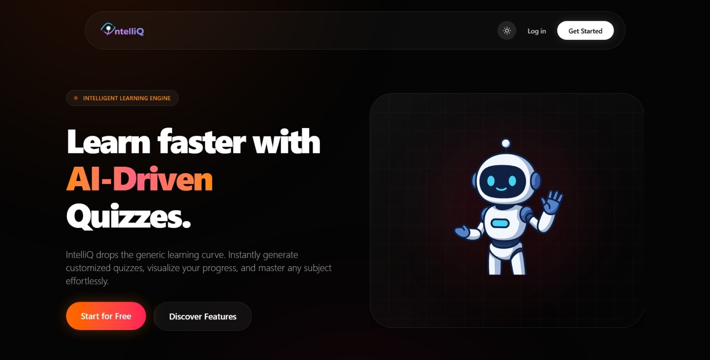

IntelliQ – AI Quiz Generator
React.js, Node.js, OpenAI API
AI-powered system generating quizzes from PDFs with 95% accuracy using GPT API.
AI Engineer | AI Data Annotation | Full-Stack Developer
Helping AI Models Learn Better | Open to Freelance Projects | Meerut, UP
I am a Computer Science Engineering student at IIMT Engineering College with a deep interest in Artificial Intelligence and Full-Stack Development. Along with building clean and responsive websites, I have significant experience in AI training, data annotation, and RLHF workflows to help AI models learn better. As an active freelancer, I am dedicated to delivering high-quality digital solutions and exploring the latest advancements in AI technology. This portfolio showcases my journey and expertise.
To gain practical industry experience through freelancing and software development opportunities while enhancing expertise in AI integrations and RLHF workflows.
To become a successful AI Architect and freelance developer by building impactful AI-powered products and contributing to ethical AI technology.
HCL Technologies | Nov 2024 – March 2025
Remote
Bachelor of Technology - BTech, Computer Science
CGPA: 8.4
Oct 2022 – Aug 2026
XII with PCM (2020 - 2022)
Percentage: 67%
Muzaffarnagar, India
X (2020)
Percentage: 92%
Muzaffarnagar, India

React.js, Node.js, OpenAI API
AI-powered system generating quizzes from PDFs with 95% accuracy using GPT API.

React.js, JavaScript, Tailwind
A fully functional CRUD application for task tracking using React hooks and modular components.